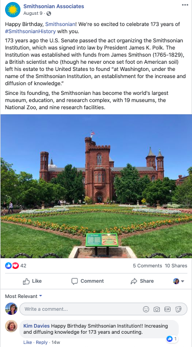

Before I started my internship in June 2019, Smithsonian Associates generally used its Facebook page to promote events in order to boost ticket sales. We usually posted for events more than one week in advance, so I asked the press director if I could start posting a “weekly roundup” on Sunday afternoons previewing all the events taking place in the week ahead. These posts tended to perform better than the typical event promotion, so my supervisor encouraged me to continue with the format. I also created Facebook polls, twitter threads and Instagram stories to single out events that had lower ticket sales in hopes of drawing in customers.
Above is an example of one of my most successful posts of the summer. It recieved doube the average amount of likes and reached an audience of more than 2,500 viewers.